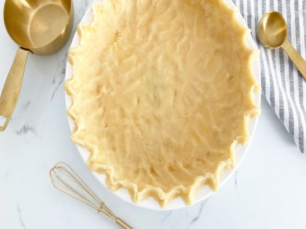

Home
No Roll Pie Crust Recipe

Description
This is an easy recipe for a quick pie crust that does not require being rolled out. Especially good for a pumpkin pie.
Ingredients
- 2 cups flour
- 1/2 tsp salt
- 1 tsp sugar
- 3/8 tsp baking powder
- 7 tbsp canola oil
- 1/4 cup cold water
Steps
- Mix everything together.
- Press into 9 inch pie pan.